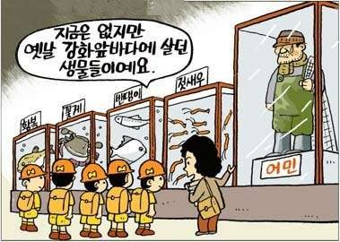

Educational Tours
Traveling according to Sir Francis Bacon, the famous Essayist, is education. In the earlier days, people, before going on long tours, used to depart form their places, with great amount of ceremony and their friends and relatives also used to give them farewell. But with advance of science, and new ways of travel developing, going out has become a pleasure now. Even government allows many concessions and grants for educational tours. The railways regularly allow concession on tours to educational and historical centers, and places of importance like the dams, powerhouses, lakes, hill stations, tourist-resorts, factories, industrial-houses, gardens, sanctuaries, monuments, and so on. When students leave their surroundings and stay out for a few days, with their friends and teachers or guides, they automatically develop self-confidence, responsibility, punctuality, self reliance, tolerance and over and above all, general knowledge. Simply reading books on science, commerce, arts, medicine, management, computers, education, law, engineering, history, architecture etc. Produces only bookworms. For having enlightened citizens for a better world-order, we should encourage educational tours in our schools and colleges and thus develop the personalities of the young boys and girls.